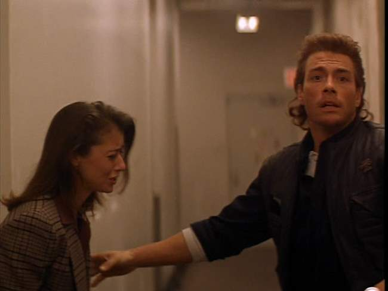
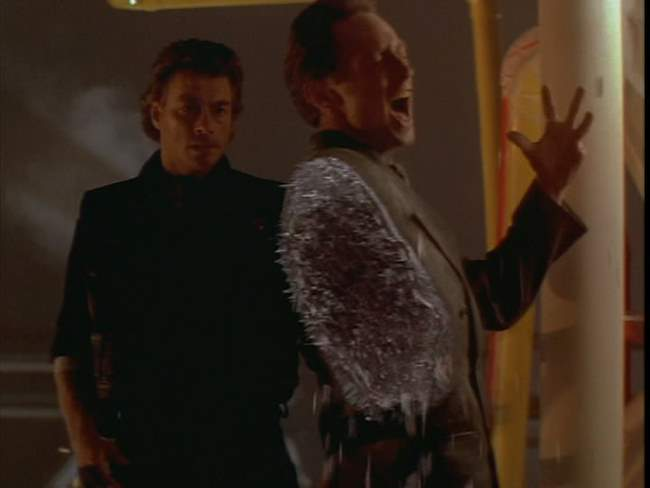

Movie review by : SFAM
Year : 1994
Directed by : Peter Hyams
Written by : Mike Richardson & Mark Verheiden
Degree of Cyberpunk visuals : Medium
Correlation to Cyberpunk themes : Medium
Rating : 5/10
Overview: In the annals of cheesy time travel movies, few are known better than Timecop, which cleared over 100 million in world wide box office gross. Starring martial arts star, Jean-Claude Van Damme, Timecop has decent but low-budget FX, a fairly shallow notion of science and time quandaries, but does provide a face-paced cyberpunk action-thriller with decent amounts of butt-kicking and gun fighting. Like many of his movies, Van Damme plays more than one version of himself ? in this case, he plays himself 10 years into the future.
The Story: In the near future (2004), time travel has now become possible. Unfortunately, there is a very real danger that going back in time will alter the present. To protect against potential abuse, a special police outfit called the "Time Enforcement Commission" is established to monitor and enforce time travel concerns. Max Walker (Van Damme) is selected for an interview to join. Unfortunately, events in the future have already changed his current circumstances, which lead to the death of his wife, Melissa (Mia Sara).
Ten years into the future, Max, still working at the Time Enforcement Commission, goes back in time to stop his former partner from attempting to splurge on low-price stocks in 1929 that will be worth a fortune in the future. In stopping his partner, Max uncovers a larger plot of time travel tampering that implicates a sitting Senator of the United States (Ron Silver). As Max starts to investigate, the bad guys begin significant tampering with the timeline. Upon return from one of Max's fact finding trips, he sees that the future has been significantly altered, and the police force is being decommissioned.

Max convinces his former friend (the time altering apparently has affected their friendship) and police Commander, Eugene (Bruce McGill), to send him back in time to fix the damage done to the timeline. In doing so, Max has an opportunity to go back and save his wife. Things come to a head when Max and the Senator meet face to face (both current and future versions of each).

The Action: The reason you want to watch Timecop is primarily for the fast-paced action sequences. We get lots of Van Damme kicking, along with a nice smattering of gunfights, all in interesting locations. As a downside, only one or two of the bad guys put up a decent fight. So many of the action scenes involve Van Damme just wailing on "red shirt" henchmen.
The FX: The FX for Time Cop worked at the time, but now look somewhat dated. There are quite a number of time portal effects, along with a few burning and "people plasma" shots sprinkled throughout. The set designs are pretty decent, most notably the time portal device, which has a nice dirty, low-tech feel to it. Still, I wish they had done more with the time travel machine, which looks and works like a rocket version of Back to the Future's flux capacitor.
The Acting: Considering this is a Van Damme movie, the acting is somewhat better than expected. Van Damme is his same self, which is to say "rather wooden." But Mia Sara, Ron Silver and Bruce McGill turn in decent performances ? certainly decent enough to work with the fast pacing.
Problems with Time: Timecop really can't be used to spark interesting discussions on time travel. The questions with how and why things work are too numerous and problematic to engage in interesting discussions. Somehow, they are able to determine if someone has violated time, and can go and stop them, but they don't seem to be able to go to the same place more than once ? why? The same two people cannot occupy the same space ? why? What happens if a guy is 80 years older and goes back an visits himself as a small child? Virtually none of the same cells will remain from the child ? certainly no skin cells (nor would they for 10 years out, as was the case for the poor Senator) ? so how does this constitute occupying the same space? When Max Walker spends the day jumping through time, the future is modified ? and he seems to have lost 10 years worth of memories. What happened to the version of Max that lived those 10 years? Did he disappear, or has he simply not gotten home from work yet? One gets the sense that Max is just jumping alternate versions of the present ? each one that he created ? but the ideas are too shallow to make any real sense of this.
Bad Guys Have Limited Imagination: Like many bad guys, the imagination of the evil doers in Timecop is severely limited. Time travel is used to go back and engage in bank heists, make stock purchases that pay out 70 years in the future, and so forth. If one really had this technology cornered, it seems that there would be far better ways to generate income. With just an ounce of imagination, one could come up with a myriad of more interesting ways of generating power and influence than petty crime. What about a recorded interview with Jesus Christ? One would think this might generate lots more power and income than knocking off a confederate wagon train shipping small quantities of gold. Instead, the extent of Senator McComb's ambition is to get rich, kill off potential enemies and then steal the presidential election.
The Bottom Line: Timecop is an enjoyable movie assuming you turn your brain off prior to watching. This approach generally works as the fast-paced nature of the movie serves to stop you from noticing too many issues. The action is good and the FX are passable, so if you want to kick back and enjoy some Hollywood martial arts wrapped up in a cyberpunk time travel flick, give it a go. I will say though that the quality of the DVD is horrid - so much so that I'm docking a star from my review. It's got a lousy transfer, no extras, and is in full screen only.